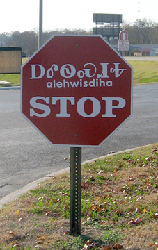
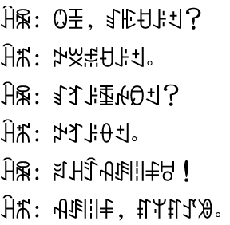

Syllabaries
Home

Stop sign with Cherokee
Kunigami sign written with Hiragana

Conversation recorded with Yi syllabary
What is a syllabary?
A
syllabary
is a type of writing system that uses individual symbols to represent syllables.
Citations
Images (left to right)
https://upload.wikimedia.org/wikipedia/commons/7/7d/Cherokee_stop_sign.png
https://upload.wikimedia.org/wikipedia/commons/9/9b/Welcome_sign_in_Kunigami.jpg
https://www.omniglot.com/writing/yi.htm
Information